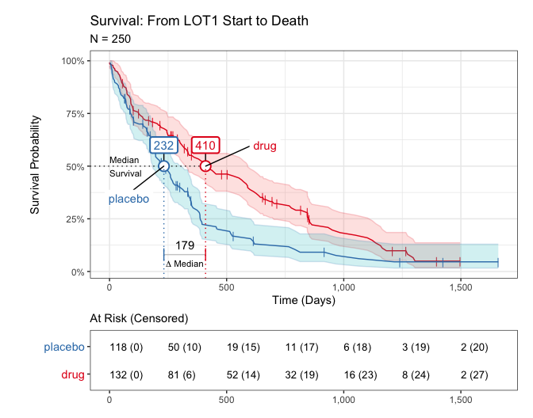

The goal of iwillsurvive is to make it easy to fit and visualize simple survival models. It does this by providing an intuitive functional interface and user-friendly in-line messages, notes, and warnings, while leveraging the gold-standard survival package for all statistical methods.
Installation
iwillsurvive is hosted at https://github.com/ndphillips/iwillsurvive. Here is how to install it:
devtools::install_github(repo = "https://github.com/ndphillips/iwillsurvive",
build_vignettes = TRUE)Example
library(iwillsurvive)
#> -----------------------------------------------------
#> iwillsurvive 0.1.3.9000 'Gloria'
#> Intro : vignette('introduction', 'iwillsurvive')
#> Repo : https://github.com/ndphillips/iwillsurvive
#> .....................................................
library(dplyr)
#>
#> Attaching package: 'dplyr'
#> The following objects are masked from 'package:stats':
#>
#> filter, lag
#> The following objects are masked from 'package:base':
#>
#> intersect, setdiff, setequal, unionIt’s best to start with one-row-per-patient (ORPP) cohort object that contains columns corresponding to
-
patientid, a unique patient identifier -
index_date, a date corresponding to an index date. -
censor_date, date corresponding to when patients were censored -
event_date, date corresponding to the event of interest. NA values indicate that the event was not observed.
iwillsurvive provides one such example in ez_cohort, a dataframe of 250 simulated patients:
ez_cohort
#> # A tibble: 250 x 5
#> patientid condition lotstartdate lastvisitdate dateofdeath
#> <chr> <chr> <date> <date> <date>
#> 1 F00001 placebo 2016-05-17 2020-12-01 NA
#> 2 F00002 placebo 2020-07-27 2020-08-25 2020-10-05
#> 3 F00003 drug 2016-04-14 2017-02-16 2017-03-13
#> 4 F00004 drug 2020-06-12 2020-11-25 NA
#> 5 F00005 placebo 2019-03-20 2020-01-13 2020-02-21
#> 6 F00006 placebo 2017-04-02 2017-10-18 2017-11-19
#> 7 F00007 placebo 2018-01-26 2019-01-12 2019-02-17
#> 8 F00008 placebo 2015-07-02 2015-11-20 2015-12-23
#> 9 F00009 drug 2019-03-08 2020-07-18 2020-08-17
#> 10 F00010 placebo 2018-08-23 2019-02-14 2019-03-08
#> # … with 240 more rowsUse the derive_*() functions to calculate key derived columns:
-
followup_date-dateofdeath, if known, andcensordate, otherwise -
followup_days- Days fromindex_date(in our case,lotstartdate) tofollowup_date -
event_status- A logical column indicating whether or not the event (dateofdeath) is known.
cohort <- ez_cohort %>%
derive_followup_date(event_date = "dateofdeath",
censor_date = "lastvisitdate") %>%
derive_followup_time(index_date = "lotstartdate") %>%
derive_event_status(event_date = "dateofdeath")Use iwillsurvive() to fit the survival model. We’ll set the follow up time to be followup_days and specify “condition” as a term (i.e.; covariate) to be used in the model.
cohort_iws <- iwillsurvive(cohort,
followup_time = "followup_days",
terms = "condition",
event_title = "Death",
index_title = "LOT1 Start")
#> ── iwillsurvive ────────────────────────────────────────────────────────────────
#> - 202 of 250 (81%) patient(s) experienced the event.
#> - survival::survfit(survival::Surv(followup_days, event_status, type = 'right') ~ condition, data = cohort)Print the object to see summary information:
cohort_iws
Is that an ascii survival curve? I think so!
Use plot_survival() to plot the Kaplan-Meier survival curve:
plot_survival(cohort_iws)
#> Warning in is.na(x): is.na() applied to non-(list or vector) of type
#> 'expression'